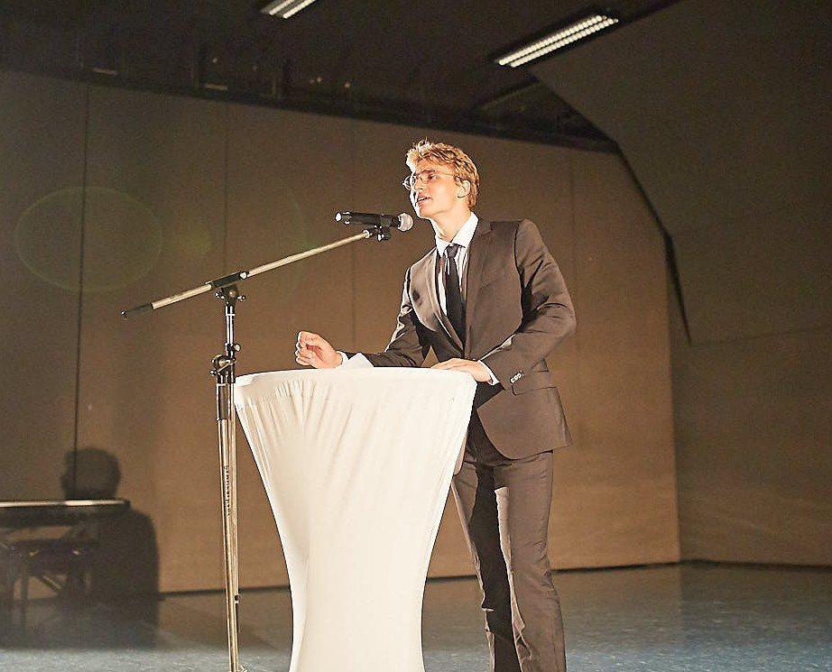

Resume

Hi, my name is Jan Biernacki. I am a 21 year old Software Developer from Germany. I have 4 years of experience in Android/Cross-Plattform App-Development, working mostly for/with startups: From planning, prototyping, interface design and backend design to full-stack development.
I personally strongly believe in the importance of open source software. Being an almost exlusively self-taught developer, I prefer and mostly use open source software to accomplish my daily tasks. This belief also led me to discover the unix environment, where I set up personal projects.
Main Interests
- Cross-Plattform App-Development
- Machine Learning
- History
- Philosophy
Bio
- 2001 born in Stuttgart, Germany
- 2015 first Android Development of Project “Zample”
- 2019 change from Android Development to Cross-Plattform-Development (Flutter)
- 2019-2022 Software Developer and temporarily Project Manager at Vamos!
- 2019-2023 studying business informatics at DHBW Stuttgart
- 2023-now studying Software Development at Internationale Hochschule
Skillset
- Programming Languages: Java/Java.dart, Javascript, SQL
- Frameworks: Flutter, React.js
- Other: CSS/HTML, Figma, Codemagic (DevOps), Ubuntu/Arch Linux, Microsoft Azure
- Fluent in German, English, Polish